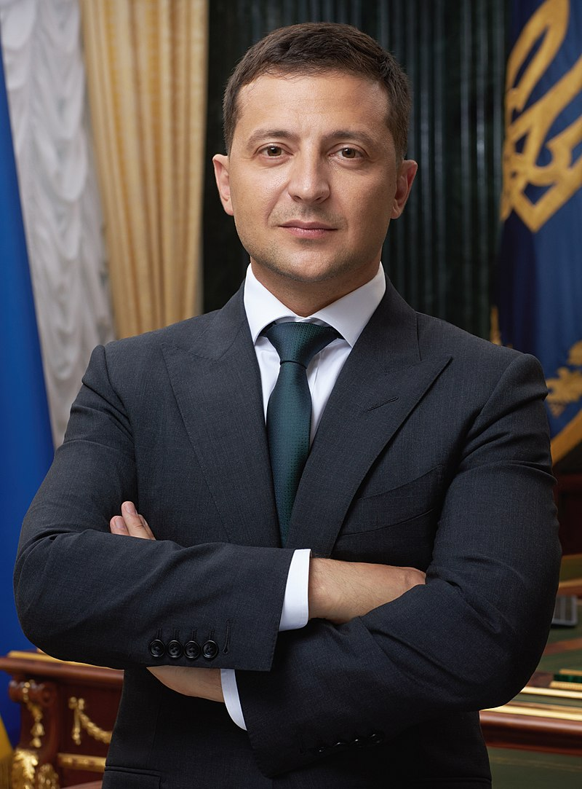

Народився 25 січня 1978 року в Кривому Розі у єврейській сім'ї. Батько Олександр Зеленський — доктор технічних наук, професор, завкафедри інформатики та інформаційних технологій Криворізького економічного інституту, мати Римма працювала інженером. Перед вступом до гімназії жив чотири роки в Монголії (у місті Ерденет), де працював батько. У 16 років склав TOEFL у Дніпрі й отримав грант на освіту в Ізраїлі, але не поїхав, бо батько не дозволив. Юридичну освіту здобув у Криворізькому економічному інституті Київського економічного університету ім. Гетьмана. За фахом ніколи не працював, за винятком двох місяців практики.
Біографія
Політична діяльність
У серпні 2014 року Зеленський виступив проти наміру Мінкульту створити список осіб з Росії, що створюють загрозу нацбезпеці України. 2015 року, після виходу серіалу «Слуга народу» (а пізніше — фільму), почалися розмови про те, що Зеленський може бути кандидатом на посаду Президента України. У грудні 2017 року юрист «Студії Квартал 95» Іван Баканов зареєстрував однойменну політичну партію — Слуга народу. У грудні 2018 року Зеленський заявив, що як президент він спробує припинити російсько-українську війну на Донбасі шляхом переговорів з Росією
Президентські вибори
Володимир Зеленський оголосив про намір балотуватися у президенти України під час новорічного звернення в ефірі каналу 1+1
21 січня 2019 року партія «Слуга народу» на своєму з'їзді висунула Зеленського кандидатом у президенти[39], а 30 січня ЦВК офіційно зареєструвала кандидатуру Зеленського на виборах. Соціологи почали включати кандидатуру Володимира Зеленського навесні 2018 року. Протягом 2018 року його рейтинг коливався у межах 5—10 % підтримки, проте після оголошення про його політичні амбіції вже в середині січня він очолив рейтинг кандидатів у президенти, надалі збільшуючи свою перевагу над рейтингами своїх головних конкурентів Петра Порошенка та лідерки ВО «Батьківщина» Юлії Тимошенко. Під час передвиборчої кампанії Зеленський позиціював себе як альтернативу старій політичній системі та старим політикам. Багато в чому висока підтримка його кандидатури зумовлювалася невдоволеністю виборців поточним станом справ у державі — розчаруванням у фігурах політичної еліти, що були при владі майже 30 років, а також переважним переконанням виборців, що після 5 років, що минули з часу Революції Гідності, країна рухається в, на їхню думку, неправильному напрямку
Власну виборчу програму Володимир Зеленський запропонував написати своїм прихильникам. Основними її пунктами стали реформування економіки України шляхом запровадження «нульової декларації» для бізнесу, переходу від солідарної до накопичувальної пенсійної системи, перетворення України на «електронну країну». Сам же Зеленський не озвучував нічого конкретного щодо своєї майбутньої політики[49]. Він намагався не виражати свої погляди публічно, уникав великих інтерв'ю, натомість провівши декілька пресконференцій і виступивши на дебатах проти Петра Порошенка. Фінансування передвиборчої кампанії здійснювалося здебільшого за рахунок партії «Слуга народу» (16 млн грн), внесків фізичних осіб (68 млн грн) та коштів самого Зеленського (11,5 млн грн); загальний бюджет передвиборчої кампанії становив 102,8 млн гривень відповідно до фінансового звіту ЦВК. Сам Зеленський заявив, що вартість його президентської кампанії становить 80,5 млн гривень його власних коштів, коштів його друзів та партнерів по бізнесу. Під час передвиборчої кампанії обговорювалися можливі зв'язки Зеленського з олігархом Ігорем Коломойським. Зокрема, зв'язки кандидата та бізнесмена досліджували проєкти журналістських розслідувань «Схеми» та Bihus.info. Журналісти виявили, що Зеленський користується послугами охоронців, які свого часу працювали на Коломойського, а до передвиборчого штабу входить юрист олігарха Андрій Богдан. Однак штаб Зеленського, як і сам Ігор Коломойський, звинувачення в співпраці відкинули. Через можливі зв'язки кандидата й олігарха низка публічних осіб та діячів культури закликали не голосувати за Володимира Зеленського
Президентство
20 травня 2019 року відбулася інавгурація Володимира Зеленського. Першими указами новобраний президент сформував керівництво Адміністрації Президента (главою ОП став Андрій Богдан) та призначив начальником Генерального штабу ЗСУ Руслана Хомчака.
21 травня 2020 року Зеленський власним указом достроково розпустив Верховну Раду VIII скликання, призначивши позачергові вибори 21 липня (замість чергових 27 жовтня). Призначив голову Національної інвестиційної ради.
19 вересня 2019 року заступникові голови Офісу президента Сергію Трофімову було передане посвідчення члена Українського товариства сліпих, виписане на ім'я Володимира Зеленського, щоби він, як Президент, звернув увагу на підприємства, де працюють сліпі, та допомагав товариству та сліпим людям. У відповідь на неодноразові прохання представників українських ЗМІ, 10—11 жовтня 2019 року Президент України Володимир Зеленський провів найтривалішу в світовій історії пресконференцію, що тривала понад 14 годин: з 10:03 ранку до 00:11 вночі наступної доби, та дав відповіді на понад 500 запитань від понад 200-х з майже акредитованих 300 журналістів з центральних та регіональних ЗМІ України та ЗМІ інших країн: США, Великої Британії, Білорусі, Італії, Іспанії, Нідерландів, Росії, Туреччини, Японії тощо. Представниками «Національного реєстру рекордів України» Володимиру Зеленському було вручено сертифікат про фіксацію рекорду як українського досягнення. 2 березня 2021 року Володимир Зеленський зробив щеплення вакциною Covishield/AstraZeneca у військовому шпиталі в Сєвєродонецьку.
Військові звання
Солдат, військово-облікова спеціальність — діловод, військову службу не проходив.
- На початок сторінки - - Президентські вибори-
Виконав студент групи ІПЗ19-1(2) Шокотко Е.В.